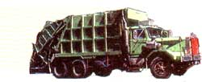
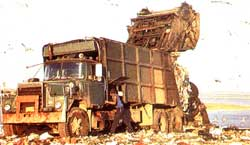

OPEN ROAD:
ABOUT THE ONLY EVENTS THATstop traffic on the Rip Van Winkle Bridge, a venerable, graceful span that crosses the Hudson about 30 miles south of Albany, are the weekly spot checks mounted by the state police to ensure that cars are properly registered and inspected, and the annual arrival in early summer of the state bridge crew. The troopers usually show up on late Tuesday mornings, a time when traffic is light and when, presumably, there is little else to occupy them. By noon they disappear, as every scofflaw knows. The bridge crew, on the other hand, works from nine to five and makes absolutely clear who owns the bridge. Really owns it. Sometimes they paint, sometimes they replace sections of road surface, and sometimes they just hose down or sweep up. And, oh yes, sometimes they eat a leisurely lunch, right there on the bridge. No matter the activity, however, the effect is the same: a total bottleneck-one lane only with orange-clad teenagers of both sexes at either end waving red flags and whispering to each other on clever portable radios.
Like a lot of other noncommuting locals, I strive to avoid the bridge at these exasperating times, crossing only in the evening and on weekends if I can help it. I was therefore doubly chagrined one Saturday morning not long ago to see traffic stacked from here to kingdom come. No police, no bridge crew, no accident. When I finally crossed, I discovered not only the source of the tie-up but also why motorists were blowing their horns with abandon this morning, as well as what accounted for the acrid stench that had lately enveloped the western end of the bridge. For at the side of the road stood a handful of demonstrators. If Waste Dumps Offend You, Blow Your Horn read their placards. I blew my horn and pulled over.
One of the demonstrators, a young wom an, made no bones about stating the case. "Waste dumps are metastasizing. There's a new one right over there," she pointed. I could see it, a nearby field strewn with what looked like demolition rubble. This close, the smell made you not want to breathe through your nose. In fact, not breathe at all.
Each month , she told me, new dump sites appear, farther and farther away from the major cities that produce the waste. Philadelphia, Newark, New York City-our particular epicenter. "First it was Rockland, Westchester, and Putnam counties, then Orange and Dutchess. Now it's Greene and Columbia," she went on. "They're proliferating, radiating outward, county by county. Waves of offal. Where you live, too."
I had told her where I lived and, indeed, had recently begun detecting an odd smell near my yellow brick house but assumed it was swamp gas or something equally pungent and sulfurous. After all, it had rained hard all summer long-so hard that puddles no longer went away and the vegetation seemed to double in mass each week.
"Swamp gas, my foot," she retorted. "That's a dump site you smell. I know right where it is, too. It's laced with PCBs."
She told me two additional facts, or perhaps they were suppositions. One, that the conflict felt by country dwellers sitting on idle land is genuine when some garbage entrepreneur offers them considerable money-always cash-for the use of that land as a dump site. And, two, as is well known (or at least widely suspected), that this new offshoot of a very ancient business is controlled by quintessentially urban syndicates, groups that initially made their mark in paving and cartage.
I felt like blowing my horn again. "What about local politicians and lawyers," I asked. "I mean, this stuff has got to be hitting them where they live, quite literally. Aren't they doing anything about it?"
"No," she replied. "This is small-town America. There's lots of poverty but also complacency and unwillingness to rock the boat. What's more, the conflict between private property and the public good or the public health is relatively new out here. You've got to understand, there is nothing so sacred is a piece of property and the right of the dead holder to do pretty much anything he or she wants-particularly if it involves making money-no matter how it impinges on the community. Within certain limits, anyway. The irony is that local health officials will quickly condemn, say, an open cesspool :because both the law and the biological effects are clear and well established) but won't do anything about a dump site that contains agents that are far more pathogenic and durable (presumably because the law is as murky is the biochemistry). The result is that the pols and the lawyers would as soon avoid the issue altogether, and tend to do so."
Well, this is tough stuff, I thought to myself as I recrossed the Winkle and headed for the yellow brick house, no longer quite the Ozian, environmentally pure refuge I had Imagined it to be. Frankly, I was also a little-rushed by her dismissal of the possibility of swamp gas, a somewhat volatile mixture reputed to explode on occasion but more widely known for producing strange and luminous visual phenomena, some of which formed the basis for reported UFO sightings in the 1950s, a time when I didn't know what to believe in. Who wouldn't want a little swamp gas nearby to liven up a dull evening, or a dull life, I asked myself in the rearview mirror. I felt deeply deprived, poetically and mythically, limited once again to only stars, moonbeams, and the sounds of familiar animals rustling in the night.
I also felt a surge of pity for the neighbors as I passed them on the way home-sitting on porches, cutting grass, washing their Dodges. Did they know swamp gas had just been snatched away from them, replaced by substances that would slowly seep into their pancreases, the marrow of their bones, the genes of their children?
In the weeks since, I have been told by officials of the New York State Environmental Conservation Department that not only have the stakes of dumping been rising, but the strategies of the garbage entrepreneurs have become elaborate, even exquisite. As a rule, landowners are being offered more and more money. But exceptions are increasing: With demand for space becoming greater every day, some entrepreneurs are dispensing with a deal altogether. Instances now crop up in which an owner, arriving home from vacation, for example, discovers his back 40 covered with heaps of rubble. All he can do is stew, since the entrepreneur has left no calling card and since removing all that rubble would drive him straight into bankruptcy.
Brazen? Think about this even newer wrinkle: truck hijacking. Many truckers live in rural areas and typically park their rigs near their homes between runs. Lately, however, a number of trucks have started disappearing in the dead of night, to all appearances stolen. Frantic calls to the police and the insurance companies follow. Then it happens, usually a call from the police a few days later. " We have your semi. Found it parked over on Elm Street. " The owner, of course, discovers that the trailer is crammed to the rafters with waste. Now it's his problem.
I never thought, when I became a teenager and hated all kids younger than I, that I would ever again find myself witnessing the game called Hot Potato. I was obviously wrong. It's played all the time around here. I may even be playing it myself by continuing to suppose that my yellow brick house is out of this world.
|
 THOMAS BRAISE/STOCK MARKET |
 THOMAS BRAISE/STOCK MARKET |
|